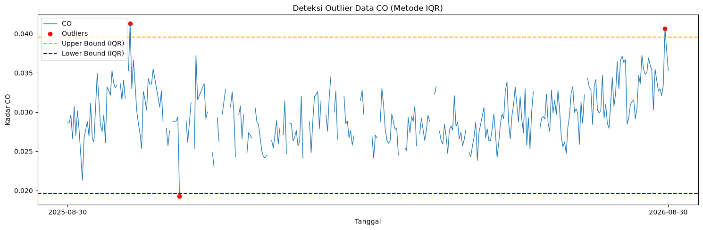
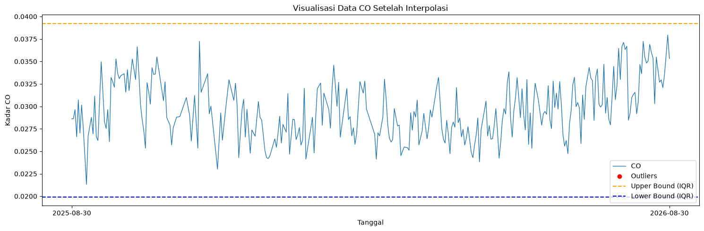
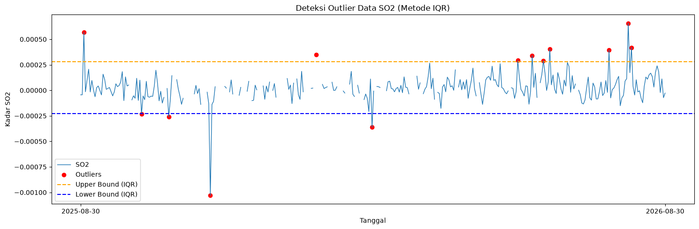
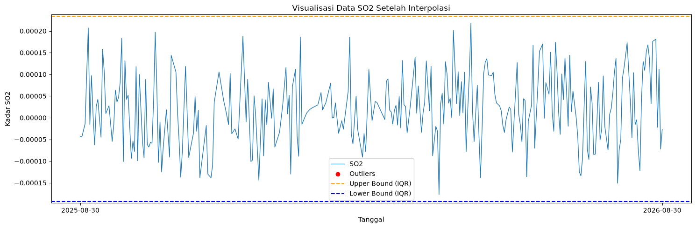
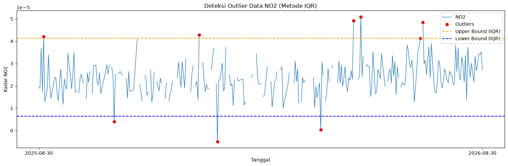
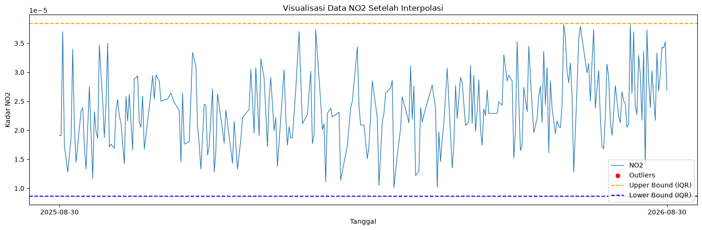
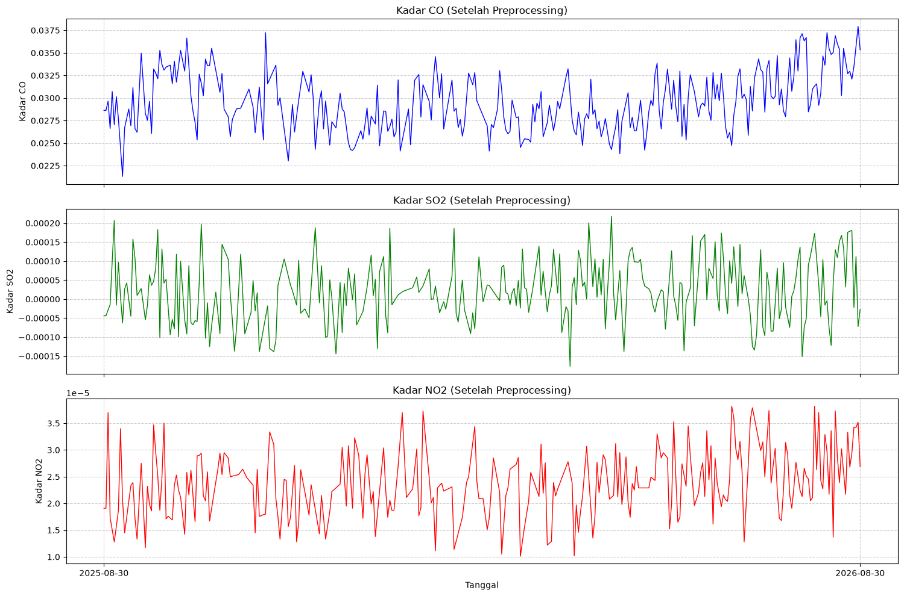
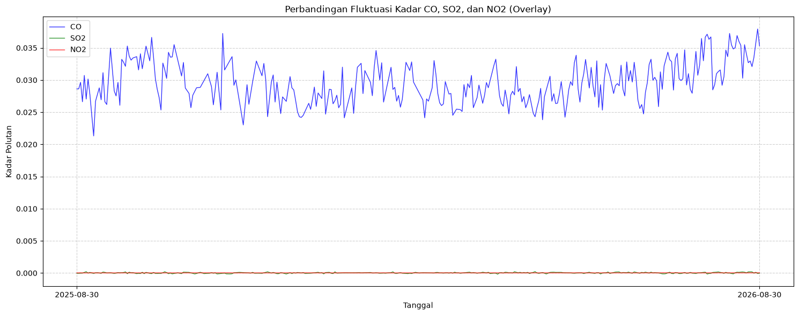

Data Preprocessing dan Ekstraksi Fitur (Interpolasi Linear)#
Preprocessing: Penanganan Outliers dan Interpolasi Linear#
Pada tahap Data Understanding, kita telah mengidentifikasi adanya kemungkinan nilai outliers pada deret waktu. Untuk menangani permasalahan ini dan mempersiapkan data agar bisa diekstrak fiturnya secara mulus, kita menerapkan pembersihan data secara iteratif menggunakan metode Rentang Interkuartil (IQR) dan mengisi (imputasi) kekosongan data menggunakan interpolasi linier.
Mengapa Interpolasi Linier?
Interpolasi linier sangat cocok untuk data deret waktu polutan udara karena metode ini bekerja dengan menarik “garis lurus” matematis untuk memperkirakan nilai yang hilang berdasarkan dua titik observasi terdekat yang valid (titik data sebelum dan titik sesudahnya). Melalui fungsi bawaan pandas (seperti interpolate(method='linear') maupun method='time'), kekosongan data akibat penghapusan outlier dapat diisi secara proporsional dengan mengasumsikan perubahan konstan pada jarak waktu yang kosong. Hal ini efektif untuk menjaga keberlanjutan (continuity) tren temporal tanpa menghasilkan anomali baru pada sebaran data harian.
Proses deteksi outlier dan imputasi linier ini dijalankan secara berulang (dalam blok loop) hingga distribusi benar-benar bersih. Langkah iteratif ini diperlukan karena nilai baru dari hasil interpolasi terkadang dapat sedikit menggeser batas atas/bawah perhitungan IQR, sehingga deteksi tambahan dipastikan berjalan tuntas.
Di akhir proses imputasi, teknik backward fill (bfill) serta forward fill (ffill) dimanfaatkan guna mengatasi nilai kosong pada bagian pinggir atau awalan dan akhiran rangkaian data yang tidak bisa diinterpolasi secara linier karena tidak diapit oleh dua titik.
Berikut adalah tahapan deteksi outlier, imputasi, dan penyimpanan dataset untuk masing-masing polutan udara:
1. Karbon Monoksida (CO)#
import pandas as pd
import numpy as np
import matplotlib.pyplot as plt
df = pd.read_csv("csv/COInWidodaren.csv")
df['date'] = pd.to_datetime(df['date'])
df = df.sort_values('date').reset_index(drop=True)
df['CO'] = pd.to_numeric(df['CO'], errors='coerce')
# Hitung IQR
Q1 = df['CO'].quantile(0.25)
Q3 = df['CO'].quantile(0.75)
IQR = Q3 - Q1
lower_bound = Q1 - 1.5 * IQR
upper_bound = Q3 + 1.5 * IQR
# Filter outlier
outliers_iqr = df[(df['CO'] < lower_bound) | (df['CO'] > upper_bound)]
print("Jumlah Outlier CO (IQR):", len(outliers_iqr))
Jumlah Outlier CO (IQR): 3
Visualisasi batas ambang IQR terhadap distribusi data CO:
plt.figure(figsize=(15,5))
plt.plot(df['date'], df['CO'], label="CO", linewidth=1)
plt.scatter(outliers_iqr['date'], outliers_iqr['CO'],
color='red', marker='o', label="Outliers")
plt.axhline(upper_bound, color='orange', linestyle='dashed', label="Upper Bound (IQR)")
plt.axhline(lower_bound, color='blue', linestyle='dashed', label="Lower Bound (IQR)")
plt.title("Deteksi Outlier Data CO (Metode IQR)")
plt.xlabel("Tanggal")
plt.ylabel("Kadar CO")
plt.legend()
plt.tight_layout()
plt.xticks(
ticks=[df['date'].iloc[0], df['date'].iloc[-1]],
labels=[df['date'].iloc[0].strftime('%Y-%m-%d'),
df['date'].iloc[-1].strftime('%Y-%m-%d')]
)
plt.show()

Penanganan outlier dan pengisian nilai yang hilang untuk CO:
df['CO_filled'] = df['CO'].copy()
# Looping iteratif untuk membersihkan outlier sampai benar-benar habis
while True:
# 1. Hitung ulang kuartil dan batas IQR berdasarkan data saat ini
Q1 = df['CO_filled'].quantile(0.25)
Q3 = df['CO_filled'].quantile(0.75)
IQR = Q3 - Q1
lower_bound = Q1 - 1.5 * IQR
upper_bound = Q3 + 1.5 * IQR
# 2. Deteksi lokasi outlier
outliers = (df['CO_filled'] < lower_bound) | (df['CO_filled'] > upper_bound)
# Jika sudah tidak ada outlier yang terdeteksi, hentikan perulangan
if not outliers.any():
break
# 3. Mask nilai outlier menjadi NaN, lalu isi dengan interpolasi linier + bfill + ffill
df['CO_filled'] = df['CO_filled'].mask(outliers)
df['CO_filled'] = df['CO_filled'].interpolate(method='linear').bfill().ffill()
# 4. Simpan hasil akhir ke DataFrame baru dan ekspor ke CSV
df_co = pd.DataFrame({"date": df['date'], "CO": df['CO_filled']})
df_co.to_csv("csv/CO_filed.csv", index=False)
print("Data CO berhasil diproses dan disimpan ke CO_filed.csv")
Data CO berhasil diproses dan disimpan ke CO_filed.csv
Visualisasi data CO setelah proses interpolasi (memastikan sudah tidak ada outlier):
df_co_final = pd.read_csv("csv/CO_filed.csv")
df_co_final['date'] = pd.to_datetime(df_co_final['date'])
Q1 = df_co_final['CO'].quantile(0.25)
Q3 = df_co_final['CO'].quantile(0.75)
IQR = Q3 - Q1
lower_bound = Q1 - 1.5 * IQR
upper_bound = Q3 + 1.5 * IQR
outliers_iqr = df_co_final[(df_co_final['CO'] < lower_bound) | (df_co_final['CO'] > upper_bound)]
plt.figure(figsize=(15,5))
plt.plot(df_co_final['date'], df_co_final['CO'], label="CO", linewidth=1)
plt.scatter(outliers_iqr['date'], outliers_iqr['CO'],
color='red', marker='o', label="Outliers")
plt.axhline(upper_bound, color='orange', linestyle='dashed', label="Upper Bound (IQR)")
plt.axhline(lower_bound, color='blue', linestyle='dashed', label="Lower Bound (IQR)")
plt.title("Visualisasi Data CO Setelah Interpolasi")
plt.xlabel("Tanggal")
plt.ylabel("Kadar CO")
plt.legend()
plt.tight_layout()
plt.xticks(
ticks=[df_co_final['date'].iloc[0], df_co_final['date'].iloc[-1]],
labels=[df_co_final['date'].iloc[0].strftime('%Y-%m-%d'),
df_co_final['date'].iloc[-1].strftime('%Y-%m-%d')]
)
plt.show()

2. Sulfur Dioksida (SO2)#
import pandas as pd
import numpy as np
import matplotlib.pyplot as plt
df = pd.read_csv("csv/SO2InWidodaren.csv")
df['date'] = pd.to_datetime(df['date'])
df = df.sort_values('date').reset_index(drop=True)
df['SO2'] = pd.to_numeric(df['SO2'], errors='coerce')
# Hitung IQR
Q1 = df['SO2'].quantile(0.25)
Q3 = df['SO2'].quantile(0.75)
IQR = Q3 - Q1
lower_bound = Q1 - 1.5 * IQR
upper_bound = Q3 + 1.5 * IQR
# Filter outlier
outliers_iqr = df[(df['SO2'] < lower_bound) | (df['SO2'] > upper_bound)]
print("Jumlah Outlier SO2 (IQR):", len(outliers_iqr))
Jumlah Outlier SO2 (IQR): 13
Visualisasi batas ambang IQR terhadap distribusi data SO2:
plt.figure(figsize=(15,5))
plt.plot(df['date'], df['SO2'], label="SO2", linewidth=1)
plt.scatter(outliers_iqr['date'], outliers_iqr['SO2'],
color='red', marker='o', label="Outliers")
plt.axhline(upper_bound, color='orange', linestyle='dashed', label="Upper Bound (IQR)")
plt.axhline(lower_bound, color='blue', linestyle='dashed', label="Lower Bound (IQR)")
plt.title("Deteksi Outlier Data SO2 (Metode IQR)")
plt.xlabel("Tanggal")
plt.ylabel("Kadar SO2")
plt.legend()
plt.tight_layout()
plt.xticks(
ticks=[df['date'].iloc[0], df['date'].iloc[-1]],
labels=[df['date'].iloc[0].strftime('%Y-%m-%d'),
df['date'].iloc[-1].strftime('%Y-%m-%d')]
)
plt.show()

Penanganan outlier dan pengisian nilai yang hilang untuk SO2:
df['SO2_filled'] = df['SO2'].copy()
# Looping iteratif untuk membersihkan outlier sampai benar-benar habis
while True:
# 1. Hitung ulang kuartil dan batas IQR berdasarkan data saat ini
Q1 = df['SO2_filled'].quantile(0.25)
Q3 = df['SO2_filled'].quantile(0.75)
IQR = Q3 - Q1
lower_bound = Q1 - 1.5 * IQR
upper_bound = Q3 + 1.5 * IQR
# 2. Deteksi lokasi outlier
outliers = (df['SO2_filled'] < lower_bound) | (df['SO2_filled'] > upper_bound)
# Jika sudah tidak ada outlier yang terdeteksi, hentikan perulangan
if not outliers.any():
break
# 3. Mask nilai outlier menjadi NaN, lalu isi dengan interpolasi linier + bfill + ffill
df['SO2_filled'] = df['SO2_filled'].mask(outliers)
df['SO2_filled'] = df['SO2_filled'].interpolate(method='linear').bfill().ffill()
# 4. Simpan hasil akhir ke DataFrame baru dan ekspor ke CSV
df_so2 = pd.DataFrame({"date": df['date'], "SO2": df['SO2_filled']})
df_so2.to_csv("csv/SO2_filed.csv", index=False)
print("Data SO2 berhasil diproses dan disimpan ke SO2_filed.csv")
Data SO2 berhasil diproses dan disimpan ke SO2_filed.csv
Visualisasi data SO2 setelah proses interpolasi (memastikan sudah tidak ada outlier):
df_so2_final = pd.read_csv("csv/SO2_filed.csv")
df_so2_final['date'] = pd.to_datetime(df_so2_final['date'])
Q1 = df_so2_final['SO2'].quantile(0.25)
Q3 = df_so2_final['SO2'].quantile(0.75)
IQR = Q3 - Q1
lower_bound = Q1 - 1.5 * IQR
upper_bound = Q3 + 1.5 * IQR
outliers_iqr = df_so2_final[(df_so2_final['SO2'] < lower_bound) | (df_so2_final['SO2'] > upper_bound)]
plt.figure(figsize=(15,5))
plt.plot(df_so2_final['date'], df_so2_final['SO2'], label="SO2", linewidth=1)
plt.scatter(outliers_iqr['date'], outliers_iqr['SO2'],
color='red', marker='o', label="Outliers")
plt.axhline(upper_bound, color='orange', linestyle='dashed', label="Upper Bound (IQR)")
plt.axhline(lower_bound, color='blue', linestyle='dashed', label="Lower Bound (IQR)")
plt.title("Visualisasi Data SO2 Setelah Interpolasi")
plt.xlabel("Tanggal")
plt.ylabel("Kadar SO2")
plt.legend()
plt.tight_layout()
plt.xticks(
ticks=[df_so2_final['date'].iloc[0], df_so2_final['date'].iloc[-1]],
labels=[df_so2_final['date'].iloc[0].strftime('%Y-%m-%d'),
df_so2_final['date'].iloc[-1].strftime('%Y-%m-%d')]
)
plt.show()

3. Nitrogen Dioksida (NO2)#
import pandas as pd
import numpy as np
import matplotlib.pyplot as plt
df = pd.read_csv("csv/NO2InWidodaren.csv")
df['date'] = pd.to_datetime(df['date'])
df = df.sort_values('date').reset_index(drop=True)
df['NO2'] = pd.to_numeric(df['NO2'], errors='coerce')
# Hitung IQR
Q1 = df['NO2'].quantile(0.25)
Q3 = df['NO2'].quantile(0.75)
IQR = Q3 - Q1
lower_bound = Q1 - 1.5 * IQR
upper_bound = Q3 + 1.5 * IQR
# Filter outlier
outliers_iqr = df[(df['NO2'] < lower_bound) | (df['NO2'] > upper_bound)]
print("Jumlah Outlier NO2 (IQR):", len(outliers_iqr))
Jumlah Outlier NO2 (IQR): 9
Visualisasi batas ambang IQR terhadap distribusi data NO2:
plt.figure(figsize=(15,5))
plt.plot(df['date'], df['NO2'], label="NO2", linewidth=1)
plt.scatter(outliers_iqr['date'], outliers_iqr['NO2'],
color='red', marker='o', label="Outliers")
plt.axhline(upper_bound, color='orange', linestyle='dashed', label="Upper Bound (IQR)")
plt.axhline(lower_bound, color='blue', linestyle='dashed', label="Lower Bound (IQR)")
plt.title("Deteksi Outlier Data NO2 (Metode IQR)")
plt.xlabel("Tanggal")
plt.ylabel("Kadar NO2")
plt.legend()
plt.tight_layout()
plt.xticks(
ticks=[df['date'].iloc[0], df['date'].iloc[-1]],
labels=[df['date'].iloc[0].strftime('%Y-%m-%d'),
df['date'].iloc[-1].strftime('%Y-%m-%d')]
)
plt.show()

Penanganan outlier dan pengisian nilai yang hilang untuk NO2:
df['NO2_filled'] = df['NO2'].copy()
# Looping iteratif untuk membersihkan outlier sampai benar-benar habis
while True:
# 1. Hitung ulang kuartil dan batas IQR berdasarkan data saat ini
Q1 = df['NO2_filled'].quantile(0.25)
Q3 = df['NO2_filled'].quantile(0.75)
IQR = Q3 - Q1
lower_bound = Q1 - 1.5 * IQR
upper_bound = Q3 + 1.5 * IQR
# 2. Deteksi lokasi outlier
outliers = (df['NO2_filled'] < lower_bound) | (df['NO2_filled'] > upper_bound)
# Jika sudah tidak ada outlier yang terdeteksi, hentikan perulangan
if not outliers.any():
break
# 3. Mask nilai outlier menjadi NaN, lalu isi dengan interpolasi linier + bfill + ffill
df['NO2_filled'] = df['NO2_filled'].mask(outliers)
df['NO2_filled'] = df['NO2_filled'].interpolate(method='linear').bfill().ffill()
# 4. Simpan hasil akhir ke DataFrame baru dan ekspor ke CSV
df_no2 = pd.DataFrame({"date": df['date'], "NO2": df['NO2_filled']})
df_no2.to_csv("csv/NO2_filed.csv", index=False)
print("Data NO2 berhasil diproses dan disimpan ke NO2_filed.csv")
Data NO2 berhasil diproses dan disimpan ke NO2_filed.csv
Visualisasi data NO2 setelah proses interpolasi (memastikan sudah tidak ada outlier):
df_no2_final = pd.read_csv("csv/NO2_filed.csv")
df_no2_final['date'] = pd.to_datetime(df_no2_final['date'])
Q1 = df_no2_final['NO2'].quantile(0.25)
Q3 = df_no2_final['NO2'].quantile(0.75)
IQR = Q3 - Q1
lower_bound = Q1 - 1.5 * IQR
upper_bound = Q3 + 1.5 * IQR
outliers_iqr = df_no2_final[(df_no2_final['NO2'] < lower_bound) | (df_no2_final['NO2'] > upper_bound)]
plt.figure(figsize=(15,5))
plt.plot(df_no2_final['date'], df_no2_final['NO2'], label="NO2", linewidth=1)
plt.scatter(outliers_iqr['date'], outliers_iqr['NO2'],
color='red', marker='o', label="Outliers")
plt.axhline(upper_bound, color='orange', linestyle='dashed', label="Upper Bound (IQR)")
plt.axhline(lower_bound, color='blue', linestyle='dashed', label="Lower Bound (IQR)")
plt.title("Visualisasi Data NO2 Setelah Interpolasi")
plt.xlabel("Tanggal")
plt.ylabel("Kadar NO2")
plt.legend()
plt.tight_layout()
plt.xticks(
ticks=[df_no2_final['date'].iloc[0], df_no2_final['date'].iloc[-1]],
labels=[df_no2_final['date'].iloc[0].strftime('%Y-%m-%d'),
df_no2_final['date'].iloc[-1].strftime('%Y-%m-%d')]
)
plt.show()

4. Visualisasi Gabungan Setelah Preprocessing#
Setelah proses penanganan outlier dan interpolasi selesai untuk ketiga polutan, kita dapat melihat visualisasi gabungan dari kadar CO, SO2, dan NO2 yang telah bersih dan utuh. Deret waktu ini telah siap untuk dilanjutkan ke tahap ekstraksi fitur.
import pandas as pd
import matplotlib.pyplot as plt
# Memuat data yang telah diproses
df_co = pd.read_csv("csv/CO_filed.csv")
df_so2 = pd.read_csv("csv/SO2_filed.csv")
df_no2 = pd.read_csv("csv/NO2_filed.csv")
df_co['date'] = pd.to_datetime(df_co['date'])
df_so2['date'] = pd.to_datetime(df_so2['date'])
df_no2['date'] = pd.to_datetime(df_no2['date'])
# Membuat subplot untuk ketiga polutan
fig, axes = plt.subplots(3, 1, figsize=(15, 10), sharex=True)
# Plot CO
axes[0].plot(df_co['date'], df_co['CO'], color='blue', linewidth=1)
axes[0].set_title('Kadar CO (Setelah Preprocessing)')
axes[0].set_ylabel('Kadar CO')
axes[0].grid(True, linestyle='--', alpha=0.6)
# Plot SO2
axes[1].plot(df_so2['date'], df_so2['SO2'], color='green', linewidth=1)
axes[1].set_title('Kadar SO2 (Setelah Preprocessing)')
axes[1].set_ylabel('Kadar SO2')
axes[1].grid(True, linestyle='--', alpha=0.6)
# Plot NO2
axes[2].plot(df_no2['date'], df_no2['NO2'], color='red', linewidth=1)
axes[2].set_title('Kadar NO2 (Setelah Preprocessing)')
axes[2].set_xlabel('Tanggal')
axes[2].set_ylabel('Kadar NO2')
axes[2].grid(True, linestyle='--', alpha=0.6)
# Menyesuaikan tampilan sumbu X
plt.xticks(
ticks=[df_co['date'].iloc[0], df_co['date'].iloc[-1]],
labels=[df_co['date'].iloc[0].strftime('%Y-%m-%d'),
df_co['date'].iloc[-1].strftime('%Y-%m-%d')]
)
plt.tight_layout()
plt.show()

Selain divisualisasikan dalam subplot terpisah, kita juga dapat menumpuk (overlay) ketiga polutan dalam satu grafik untuk membandingkan fluktuasinya secara langsung. Karena skala kadar polutan mungkin berbeda, perbandingan ini difokuskan pada pengamatan pola tren perubahannya.
plt.figure(figsize=(15, 6))
# Plot ketiga polutan dalam satu axis
plt.plot(df_co['date'], df_co['CO'], color='blue', label='CO', linewidth=1, alpha=0.8)
plt.plot(df_so2['date'], df_so2['SO2'], color='green', label='SO2', linewidth=1, alpha=0.8)
plt.plot(df_no2['date'], df_no2['NO2'], color='red', label='NO2', linewidth=1, alpha=0.8)
plt.title('Perbandingan Fluktuasi Kadar CO, SO2, dan NO2 (Overlay)')
plt.xlabel('Tanggal')
plt.ylabel('Kadar Polutan')
plt.grid(True, linestyle='--', alpha=0.6)
plt.legend()
# Menyesuaikan tampilan sumbu X
plt.xticks(
ticks=[df_co['date'].iloc[0], df_co['date'].iloc[-1]],
labels=[df_co['date'].iloc[0].strftime('%Y-%m-%d'),
df_co['date'].iloc[-1].strftime('%Y-%m-%d')]
)
plt.tight_layout()
plt.show()

5. Penggabungan Data Polutan#
Sebelum melakukan ekstraksi fitur, ada baiknya seluruh data polutan udara digabungkan ke dalam satu file dataset tunggal (Polutan_Baron_linear.csv). Hal ini akan memudahkan proses iterasi dan menghindari duplikasi kolom tanggal saat fitur diekstraksi sekaligus.
import pandas as pd
# Memuat data yang telah diproses
df_co = pd.read_csv("csv/CO_filed.csv")
df_no2 = pd.read_csv("csv/NO2_filed.csv")
df_so2 = pd.read_csv("csv/SO2_filed.csv")
dataframe_merged = pd.DataFrame({
"date": df_no2['date'],
"CO": df_co['CO'],
"NO2": df_no2['NO2'],
"SO2": df_so2['SO2']
})
dataframe_merged.to_csv("csv/Polutan_Ngawi_linear.csv", index=False)
print("Data polutan berhasil digabungkan dan disimpan ke Polutan_Ngawi_linear.csv")
Data polutan berhasil digabungkan dan disimpan ke Polutan_Ngawi_linear.csv
Ekstraksi Fitur Deret Waktu (Time Series)#
Dengan data deret waktu polutan udara yang konsisten (tanpa tanggal hilang dan tanpa outlier), kita dapat melangkah ke ekstraksi berbagai fitur statistik, temporal, maupun spektral. Fitur-fitur ini sangat berguna sebagai parameter input yang merepresentasikan karakteristik trend harian polutan ke dalam model machine learning maupun deep learning.
Kita akan memanfaatkan modul pustaka Python bernama tsfel (Time Series Feature Extraction Library) guna mempermudah proses komputasi serta standarisasi ragam tipe fitur. Ekstraksi dilakukan secara looping untuk seluruh polutan yang ada di dalam dataset gabungan (Polutan_Baron_linear.csv).
Untuk memastikan hasil ekstraksi bersih dan aman dari error, pada setiap iterasi polutan data akan kembali difilter dari outlier dan diinterpolasi ulang menggunakan metode time sebelum dilakukan komputasi fitur. Seluruh fitur dari ketiga polutan (3 × 68 = 204 fitur) kemudian digabung dalam satu baris.
import pandas as pd
import numpy as np
import inspect
import tsfel.feature_extraction.features as tsfel_features
# ---------- 1. Muat 1 file CSV utama yang berisi semua polutan ----------
df = pd.read_csv('csv/Polutan_Ngawi_linear.csv')
df['date'] = pd.to_datetime(df['date'])
df = df.sort_values('date').reset_index(drop=True)
pollutants = ['NO2', 'SO2', 'CO']
fs = 1
# ---------- 2. Daftar 68 Fitur TSFEL ----------
FEATURE_LIST = """abs_energy auc autocorr average_power calc_centroid calc_max calc_mean
calc_median calc_min calc_std calc_var dfa distance ecdf ecdf_percentile ecdf_percentile_count
ecdf_slope entropy fundamental_frequency higuchi_fractal_dimension hist_mode human_range_energy
hurst_exponent interq_range kurtosis lempel_ziv lpcc max_frequency max_power_spectrum
maximum_fractal_length mean_abs_deviation mean_abs_diff mean_diff median_abs_deviation
median_abs_diff median_diff median_frequency mfcc mse negative_turning neighbourhood_peaks
petrosian_fractal_dimension pk_pk_distance positive_turning power_bandwidth rms skewness slope
spectral_centroid spectral_decrease spectral_distance spectral_entropy spectral_kurtosis
spectral_positive_turning spectral_roll_off spectral_roll_on spectral_skewness spectral_slope
spectral_spread spectral_variation spectrogram_mean_coeff sum_abs_diff wavelet_abs_mean
wavelet_energy wavelet_entropy wavelet_std wavelet_var zero_cross""".split()
print(f"Jumlah fitur per polutan: {len(FEATURE_LIST)}")
print(f"Total target fitur keseluruhan: {len(FEATURE_LIST) * len(pollutants)}")
# ---------- 3. Fungsi ekstraksi dan penyeragaman output ----------
def to_scalar(result):
if isinstance(result, dict) and "values" in result:
result = result["values"]
if isinstance(result, (list, tuple, np.ndarray)):
arr = np.asarray(result, dtype=float)
return float(np.nanmean(arr))
return float(result)
def extract_one(fn_name, signal, fs):
fn = getattr(tsfel_features, fn_name)
params = inspect.signature(fn).parameters
if "fs" in params:
result = fn(signal, fs)
else:
result = fn(signal)
return to_scalar(result)
# Dictionary untuk menampung seluruh hasil ekstraksi
combined_row = {}
# ---------- 4. Looping untuk membersihkan dan mengekstraksi tiap polutan ----------
for pollutant in pollutants:
print(f"\n--- Memproses polutan: {pollutant} ---")
df_poly = df[['date', pollutant]].copy()
df_poly[pollutant] = pd.to_numeric(df_poly[pollutant], errors='coerce')
# Handling outlier dengan IQR (sebagai safeguard tambahan)
Q1 = df_poly[pollutant].quantile(0.25)
Q3 = df_poly[pollutant].quantile(0.75)
IQR = Q3 - Q1
lower_bound = Q1 - 1.5 * IQR
upper_bound = Q3 + 1.5 * IQR
df_poly.loc[(df_poly[pollutant] < lower_bound) | (df_poly[pollutant] > upper_bound), pollutant] = np.nan
# Interpolasi waktu dan cleaning
df_clean = df_poly.set_index('date').interpolate(method='time').ffill().bfill()
signal_1d = df_clean[pollutant].astype(float).values
# Ekstraksi fitur dan beri prefix nama polutan (misal: NO2_abs_energy)
for fn_name in FEATURE_LIST:
feature_key = f"{pollutant}_{fn_name}"
combined_row[feature_key] = extract_one(fn_name, signal_1d, fs)
# ---------- 5. Simpan ke DataFrame final ----------
extracted_features_final = pd.DataFrame([combined_row])
print(f"\nBerhasil! Total kolom akhir yang dihasilkan: {extracted_features_final.shape[1]}")
output_filename = 'csv/Ngawi_Linear.csv'
extracted_features_final.to_csv(output_filename, index=False)
print(f"File berhasil disimpan sebagai: {output_filename}")
Jumlah fitur per polutan: 68
Total target fitur keseluruhan: 204
--- Memproses polutan: NO2 ---
d:\tugas psd\website-jupyterbook\.venv\Lib\site-packages\tsfel\feature_extraction\features_utils.py:534: RuntimeWarning: invalid value encountered in divide
rs = np.divide(r, s)
--- Memproses polutan: SO2 ---
--- Memproses polutan: CO ---
Berhasil! Total kolom akhir yang dihasilkan: 204
File berhasil disimpan sebagai: csv/Ngawi_Linear.csv
Contoh cuplikan hasil ekstraksi fitur gabungan (204 kolom):
df_feat = pd.read_csv("csv/Ngawi_Linear.csv")
df_feat.head()
| NO2_abs_energy | NO2_auc | NO2_autocorr | NO2_average_power | NO2_calc_centroid | NO2_calc_max | NO2_calc_mean | NO2_calc_median | NO2_calc_min | NO2_calc_std | ... | CO_spectral_spread | CO_spectral_variation | CO_spectrogram_mean_coeff | CO_sum_abs_diff | CO_wavelet_abs_mean | CO_wavelet_energy | CO_wavelet_entropy | CO_wavelet_std | CO_wavelet_var | CO_zero_cross | |
|---|---|---|---|---|---|---|---|---|---|---|---|---|---|---|---|---|---|---|---|---|---|
| 0 | 2.168925e-07 | 0.008625 | 2.0 | 5.942260e-10 | 196.71579 | 0.000038 | 0.000024 | 0.000023 | 0.00001 | 0.000006 | ... | 0.134168 | 0.506234 | 0.000014 | 0.746127 | 0.001805 | 0.007579 | 2.139069 | 0.007337 | 0.000062 | 0.0 |
1 rows × 204 columns